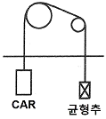
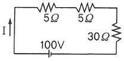
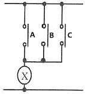

승강기기능사 (2010-01-31 기출문제)
1과목: 승강기개론
1. 엘리베이터 전동기 출력 (Pm)의 계산식으로 옳은 것은? (단, L : 정격하중, V : 정격속도, S : 1-F(F : 오버밸런스율), η : 종합효율이다.)
- Pm = (LVS) / (6120η)
- Pm = (ηVS) / (6120L)
- Pm = (6120η) / (LVS)
- Pm = (LVSη) / 6120
(정답률: 68%)

2. 엘리베이터 정격속도가 90[m/min]의 피트 깊이는 최소 몇 [m]인가?(오류 신고가 접수된 문제입니다. 반드시 정답과 해설을 확인하시기 바랍니다.)
- 1.2[m]
- 1.8[m]
- 2.1[m]
- 2.4[m]
(정답률: 69%)
3. 다음 장치 중에서 작동되어도 카의 운행에 관계없는 것은?
- 조속기 캐치
- 승강장 도어의 열림
- 과부하 감지 스위치
- 통화장치
(정답률: 90%)
4. 전망용 엘리베이터 카의 재료로서 한국산업규격에 정한 유리로 사용할 수 없는 것은?
- 복층유리
- 강화유리
- 접합유리
- 망유리
(정답률: 55%)
5. 승강기 도어의 인터록의 설명 중 옳지 않은 것은?
- 도어가 닫힐 때 도어록의 장치가 확실히 걸린 후 도어 스위치가 ON된다.
- 중력이나 압축스프링에 의해서 확실한 연결장치로 도어를 잠긴 상태로 유지하여야 한다.
- 승강장 도어가 완전히 닫히기 전에 카의 기동을 허용할 수 있도록 한다.
- 도어가 열릴 때 도어스위치가 OFF 후에 도어록이 열려야 한다.
(정답률: 69%)
6. 정격 속도가 30[m/min]인 화물용 엘리베이터의 비상정지장치 작동시의 카의 최대 속도는?(관련 규정 개정전 문제로 여기서는 기존 정답인 4번을 누르면 정답 처리됩니다. 자세한 내용은 해설을 참고하세요.)
- 39[m/min]
- 42[m/min]
- 63[m/min]
- 68[m/min]
(정답률: 70%)
7. 와이어 로프의 꼬임 방향에 의한 분류로 옳은 것은?
- Z꼬기, S꼬기
- Z꼬기, T꼬기
- S꼬기, T꼬기
- H꼬기, T꼬기
(정답률: 82%)
8. 엘리베이터 도어의 안전장치 중에서 접촉식 보호장치에 해당하는 것은?
- 세이프티 슈(safety shoe)
- 세이프티 레이(safety ray)
- 광전 장치
- 초음파 장치(ultrasonic sensor)
(정답률: 77%)
9. 그림과 같이 주로프가 주시브(main sheave) 및 빔플리(beam pulley)를 거쳐 각각 카와 균형추에 고정되는 로핑 방식은?

- 1 : 1
- 2 : 1
- 3 : 1
- 4: 1
(정답률: 66%)
10. 에스컬레이터의 구동용 모터를 선정할 때 가장 중요한 것은?
- 승강 높이
- 승강 속도
- 기계실 크기
- 수송 인원
(정답률: 43%)
11. 수평보행기의 스텝 구조에 따른 종류로 옳은 것은?
- 고무벨트식과 플라스틱성형식이 있다.
- 고무벨트식과 파레트식이 있다.
- 파레트식과 베이크라이트식이 있다.
- 고무벨트식과 베이크라이트식이 있다.
(정답률: 62%)
12. 직류 전동기 속도를 제어하는 방식이라고 볼 수 없는 것은?
- 저항제어
- 전압제어
- 계자제어
- 전류제어
(정답률: 44%)
13. 기계실을 승강로의 아래쪽에 설치하는 방식은?
- 정상부형 방식
- 횡인 구동 방식
- 베이스먼트 방식
- 사이드머신 방식
(정답률: 83%)
14. 펌프의 출력에 대한 설명으로 옳은 것은?
- 압력과 토출량에 비례한다.
- 압력과 토출량에 반비례한다.
- 압력에 비례하고 토출량에 반비례한다.
- 압력에 반비례하고 토출량에 비례한다.
(정답률: 69%)
15. 카의 유입 완충기의 최대 적용 중량은?
- 카의 자중＋65kgf
- 카의 자중＋적재 하중
- 균형추의 중량
- 카의 자중＋균형추의 중량
(정답률: 71%)
2과목: 안전관리
16. 균형추를 사용한 승객용 엘리베이터에서 제동기(Brake)의 제동력은 적재하중의 몇 [%]까지는 위험 없이 정지가 가능하여야 하는가?(오류 신고가 접수된 문제입니다. 반드시 정답과 해설을 확인하시기 바랍니다.)
- 100[%]
- 110[%]
- 120[%]
- 125[%]
(정답률: 53%)
17. 균형추의 전체 무게를 산정하는 방법으로 옳은 것은?
- 카의 전중량에 정격 적재량의 40~50[%]를 더한 무게로 한다.
- 카의 전중량에 정격 적재량을 더한 무게로 한다.
- 카의 전중량과 같은 무게로 한다.
- 카의 전중량에 정격 적재량의 110[%]를 더한 무게로 한다.
(정답률: 52%)
18. 도어 행거가 구비해야할 조건 중 옳지 않은 것은?
- 행거 롤러는 도어레일과 접촉 시 내마모성과 함께 원활한 구동이 되어야 한다.
- 도어가 레일에서 벗어나는 것을 방지하는 장치가 있어야 한다.
- 행거의 강도는 도어 무게의 2배에 해당하는 정지하중을 지탱 하도록 제작되어야 한다.
- 도어가 레일 끝을 이탈하는 것을 방지하는 스토퍼를 설치해야 한다.
(정답률: 55%)
19. 승용 승강기의 자체 검사 항목이 아닌 것은?
- 권과 방지장치 이상 유무
- 비상정지장치 이상유무
- 와이어로프의 손상유무
- 가이드레일의 상태
(정답률: 46%)
20. 사업장의 승강기를 사용하기 전에 미리 조정하여야 할 사항이 아닌 것은?
- 과부하방지장치
- 주행속도
- 파이널 리미트 스위치
- 비상정지장치
(정답률: 57%)
21. 아크용접기의 감전방지를 위해서 부착하는 것은?
- 자동전격방지장치
- 중성점접지장치
- 과전류계전장치
- 리미트 스위치
(정답률: 52%)
22. 감전사고의 원인이 되는 것과 관계없는 것은?
- 기계기구의 빈번한 기동 및 정지
- 전기기계기구나 공구의 절연파괴
- 콘덴서의 방전코일이 없는 상태
- 정전작업 시 접지가 없어 유도전압이 발생
(정답률: 73%)
23. 엘리베이터에서 사고가 발생하였을 때의 조치사항이 아닌 것은?
- 응급조치 등의 필요한 조치
- 소방서 및 의료기관 등에 연락
- 피해자의 동료에게 연락
- 전문 기술자에게 연락
(정답률: 81%)
24. 작업자의 안전을 위하여 작업을 중지시킬 수 있는 조건으로 볼 수 없는 것은?
- 퇴근시간이 경과하였을 때
- 우천, 강풍, 강설 등의 악천후일 때
- 지상에서 작업원이 확실하게 보이지 않을 정도의 짙은 안개가 끼었을 때
- 작업원이 감당하기 어려울 정도의 추위일 때
(정답률: 87%)
25. 산업재해의 원인으로 볼 수 없는 것은?
- 인적 원인
- 물적 원인
- 고의적 원인
- 관리적 원인
(정답률: 80%)
26. 감기거나 말려들기 쉬운 동력전달장치가 아닌 것은?
- 기어
- 벤딩
- 컨베이어
- 체인
(정답률: 68%)
27. 사다리 작업의 안전지침으로 적당하지 않은 것은?
- 상부와 하부가 움직이지 않도록 고정되어야 한다.
- 사다리를 다리처럼 사용해서는 안 된다.
- 부서지기 쉬운 벽돌 등을 받침대로 사용해서는 안 된다.
- 사다리 상단은 작업장으로부터 120cm 이상 올라가야 한다.
(정답률: 77%)
28. 로프식 승강기로 짝 지어진 것은?
- 직접식과 간접식
- 견인식과 권동식
- 견인식과 직접식
- 권동식과 간접식
(정답률: 64%)
29. 엘리베이터가 카 도어의 구성 부품이 아닌 것은?
- 균형체인
- 세이프티 슈
- 링크
- 행거
(정답률: 57%)
30. 에스컬레이터에서 스텝 체인은 일반적으로 어떻게 구성되어 있는가?
- 좌ㆍ우 각 1개씩 있다.
- 좌ㆍ우 각 2개씩 있다.
- 좌측에 1개, 우측에 2개 있다.
- 좌측에 2개, 우측에 1개 있다.
(정답률: 67%)
3과목: 승강기보수
31. 피트 바닥에서 점검할 항목이 아닌 것은?
- 카와 완충기의 거리
- 조속기와 로프 설치 상태
- 하부 화이날 리미트 스위치
- 이동 케이블
(정답률: 52%)
32. 비상정지장치가 작동한 경우에 검사하여야 할 사항과 거리가 먼 것은?
- 조속기의 손상 유무
- 조속기 로프의 연결부위 손상 유무
- 가이드 레일의 손상 유무
- 메인 로프의 연결부위 손상 유무
(정답률: 39%)
33. 에스컬레이터의 ㉠ 트러스 및 ㉡ 구동체인 안전율은?
- ㉠ : 3, ㉡ : 8
- ㉠ : 5, ㉡ : 10
- ㉠ : 8, ㉡ : 13
- ㉠ : 10, ㉡ : 15
(정답률: 69%)
34. 균형추의 무게 결정과 관계없는 것은?
- 카 자체하중
- 정격 적재하중
- 오버밸런스율
- 속도
(정답률: 70%)
35. 엘리베이터의 고장으로 과속 하강 시, 제어신호와 관계없이 기계적으로 카를 정지시킬 때 조속기는 어떤 힘으로 작동하는가?
- 가속력
- 전자력
- 구심력
- 원심력
(정답률: 72%)
36. 카 바닥 앞부분과 승강로 벽과의 수평거리는?(다만, 카 도어록이 설치되어 사람의 힘으로 열 수 없는 경우 또는 화물용 엘리베이터의 경우에는 적용되지 않는다.)
- 40[㎜] 이하
- 80[㎜] 이하
- 125[㎜] 이하
- 160[㎜] 이하
(정답률: 67%)
37. 승강장에서 하는 검사 중 중앙 개폐문의 경우 도어가 닫힌 상태에서 얼마 이상 열려지지 않아야 하는가?
- 3[㎝]
- 5[㎝]
- 10[㎝]
- 15[㎝]
(정답률: 52%)
38. 로프식 엘리베이터의 카 상부에서 실시하는 검사가 아닌 것은?
- 레일 클립의 조임상태
- 카 도어스위치의 동작상태
- 조속기의 작동상태
- 비상구 출구 스위치 동작상태
(정답률: 48%)
39. 레일은 5[m] 단위로 제조 되는데 T형 가이드 레일에서 13K, 18K, 24K, 30K를 바르게 설명한 것은?
- 가이드레일 형상
- 가이드 레일 길이
- 가이드레일 1m의 무게
- 가이드레일 5m의 무게
(정답률: 74%)
40. 유압 승강기의 안전밸브에 관한 설명으로 옳지 않은 것은?
- 사용압력의 1.25배를 초과하기 전에 작동하여 1.5배를 초과하지 않는다.
- 점검은 수동정지밸브를 차단하고 펌프를 강제 가동시켜 점검한다.
- 체크밸브는 펌프가 정지되었을 때 카가 자연 상승하는 것을 점검한다.
- 카의 상승 시 유입이 증대되었을 때 자동적으로 작동되어 회로를 보호한다.
(정답률: 39%)
41. 제어반에서 점검할 수 없는 것은?
- 결선 단자의 조임 상태
- 전동기회로 절연상태
- 스위치접점 및 작동상태
- 조속기 스위치 작동상태
(정답률: 55%)
42. 수평보행기의 경사도가 8° 이하인 경우에 디딤판의 속도는?
- 30[m/min] 이하
- 40[m/min] 이하
- 50[m/min] 이하
- 60[m/min] 이하
(정답률: 30%)
43. 속도 30[m/min]인 800형 에스컬레이터의 1시간당 이론 수송인원은?
- 2000명
- 4000명
- 6000명
- 9000명
(정답률: 75%)
44. 엘리베이터 제어반 등의 회로 절연에 있어서 절연저항이 가장 커야 할 곳은?
- 전동기 주회로
- 승강로내 안전회로
- 승강로내 신호회로
- 승강로내 조명회로
(정답률: 57%)
45. 주차설비 중 자동차를 운반하는 운반기의 일반적인 호칭으로 사용되지 않는 것은?(오류 신고가 접수된 문제입니다. 반드시 정답과 해설을 확인하시기 바랍니다.)
- 카고, 리프트
- 케이지, 카트
- 트레이, 파레트
- 리프트, 호이스트
(정답률: 60%)
4과목: 기계,전기기초이론
46. 유압용 엘리베이터에 가장 많이 사용하는 펌프는?
- 기어펌프
- 스크류펌프
- 밴펌프
- 피스톨펌프
(정답률: 77%)
47. 직류기에서 워드 레오나드 방식의 목적은?
- 계자자속을 조정하기 위하여
- 속도제어를 하기 위하여
- 병렬운동을 하기 위하여
- 정류를 좋게 하기 위하여
(정답률: 57%)
48. 전자력 F=BI(N)과 관계가 깊은 것은?
- 렌츠의 법칙
- 플레밍의 오른손법칙
- 오른나사법칙
- 플레밍의 왼손법칙
(정답률: 55%)
49. 피측정 전압원에 계기나 측정기를 접속하면 미소한 전류가 흘러, 전압원의 내부 저항에 의한 전압강하가 원인이 되어서 실제의 전압보다 낮은 전압이 측정되는 효과는?
- 부하효과
- 제어벡효과
- 표피효과
- 압전효과
(정답률: 45%)
50. 주로 많이 사용하는 전력제어용 사이리스터 소자는?
- TR
- THR
- SCR
- SBR
(정답률: 77%)
51. 벨트식 전동장치에서 작은 풀리 지름이 200[㎜], 큰 풀리 지름이 500[㎜]이다. 작은 풀 리가 500[rpm] 회전할 때 큰 풀리의 회전수는?
- 200[rpm]
- 350[rpm]
- 500[rpm]
- 1000[rpm]
(정답률: 39%)
52. 200[V] 전압에서 소비전력 100[W]인 전구의 저항은?
- 100[Ω]
- 200[Ω]
- 300[Ω]
- 400[Ω]
(정답률: 35%)
53. 기어 장치에서 지름피치의 값이 커질수록 이의 크기는?
- 같다.
- 커진다.
- 작아진다.
- 무관하다.
(정답률: 49%)
54. 1pF은 어느 것과 같은가?
- 10-3F
- 10-6F
- 10-9F
- 10-12F
(정답률: 46%)
55. 다음 회로에서 전류는?

- 1.5[A]
- 2.5[A]
- 3.5[A]
- 4[A]
(정답률: 67%)
56. 다음 그림과 같은 논리회로는?

- AND 회로
- OR 회로
- NOT 회로
- NAND 회로
(정답률: 62%)
57. 다음 중 판의 두께를 가장 정밀하게 측정할 수 있는 것은?
- 줄자
- 직각자
- R 게이지
- 마이크로미터
(정답률: 76%)
58. 클리퍼(clipper)회로에 대한 설명으로 가장 적절 한 것은?
- 교류회로를 직류로 변환하는 회로
- 사인파를 일정한 레벨로 증폭시키는 회로
- 구형파를 일정한 레벨로 증폭시키는 회로
- 파형의 상부 또는 하부를 일정한 레벨로 자르는 회로
(정답률: 48%)
59. 3상 유도 전동기가 역상제동(plugging)이란?
- 플러그를 사용하여 전원에 연결하는 방법
- 운전 중 2선의 접속을 바꾸어 접속함으로써 상 회전을 바꾸어 제동하는 법
- 단상 상태로 기동 할 때 일어나는 현상
- 고정자와 회전자의 상수가 일치하지 않을 때 일어나는 현상
(정답률: 76%)
60. 되먹임 제어에서 가장 중요한 장치는?
- 입력과 출력을 비교하는 장치
- 응답속도를 느리게 하는 장치
- 응답속도를 빠르게 하는 장치
- 안정도를 좋게 하는 장치
(정답률: 69%)